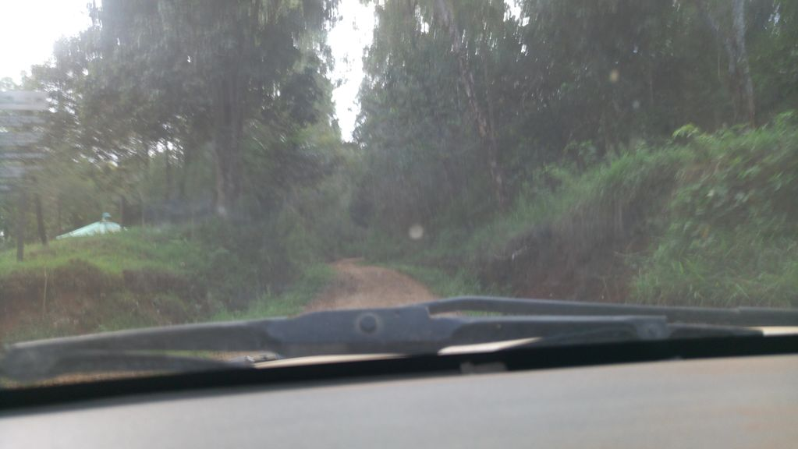
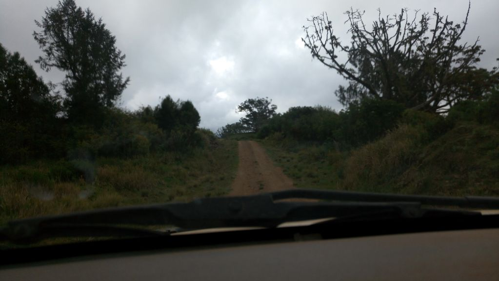
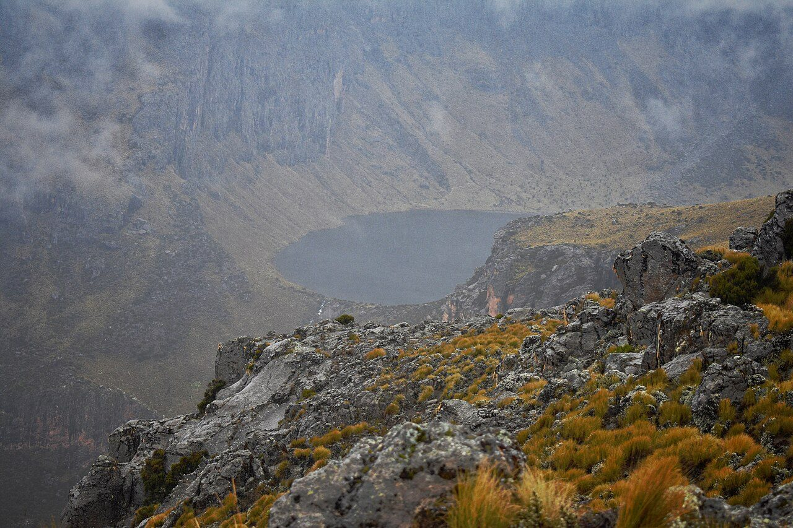
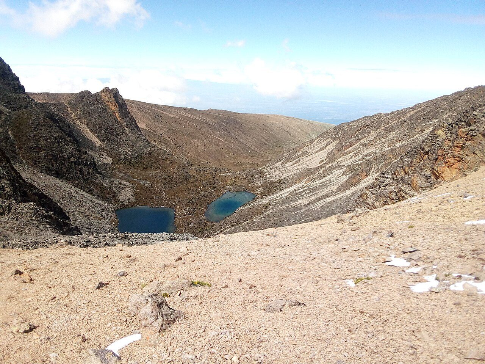
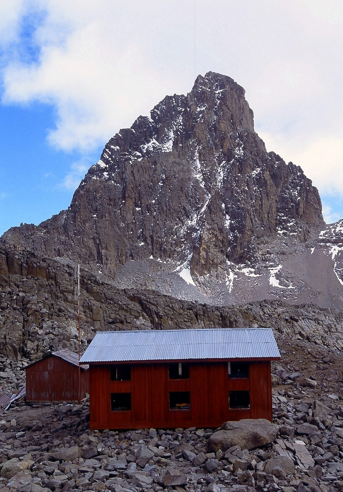
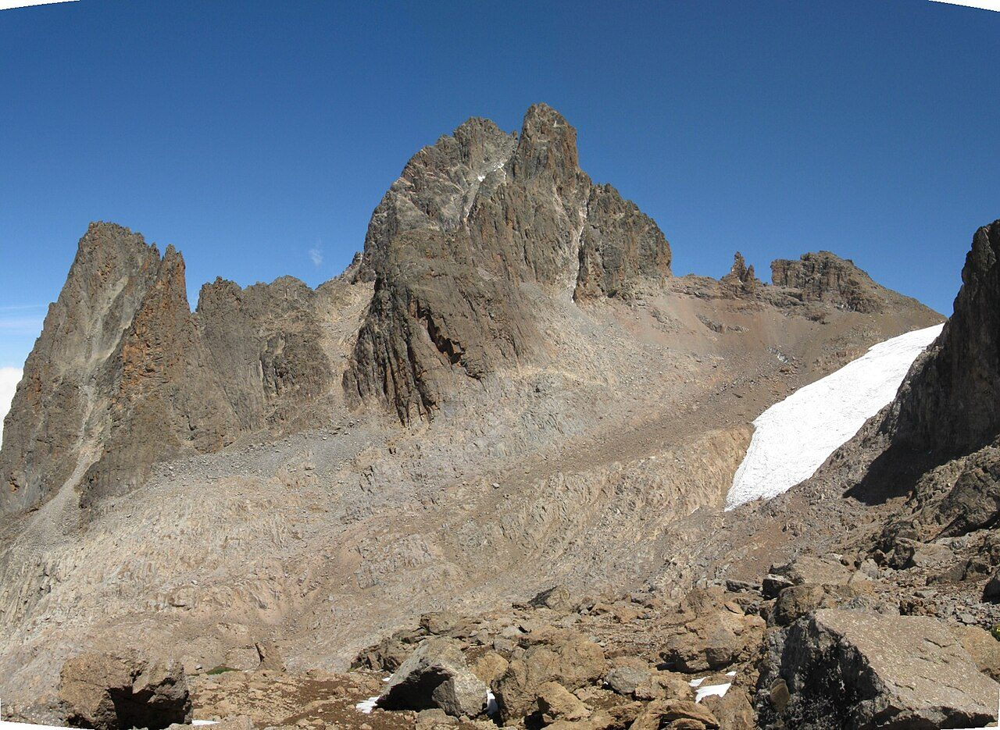

Mount Kenya (Chogoria Route)
Trek the Chogoria Route past crater lakes and giant lobelias to Point Lenana, Mount Kenya's summit.
Mount Kenya (Chogoria Route) runs 39 km through Kenya and finishes at Point Lenana. The first landmark is Chogoria Gate. At 5,000 steps a day it's about 2 weeks of the walking you do anyway. All 6 landmarks are below, in walking order, with a photograph and the story of the place.
- 39km end to end
- 6landmarks
- 2 weeksat 5,000 steps a day
- Point Lenanafinishes at

The landmarks of Mount Kenya (Chogoria Route)
6 landmarks, in walking order. Each photograph is by the person credited beneath it, used as they licensed it.
-

Photo: roadroid · Mapillary, CC BY-SA 4.0 Chogoria Gate
The Chogoria Gate opens the wildest and most beautiful of Mount Kenya's routes, climbing from farmland through dense bamboo and podocarp forest thick with elephant and buffalo. A long forest track leads up toward the moorland. This eastern approach is far quieter than the crowded western routes. The peaks are still hidden ahead.
-

Photo: roadroid · Mapillary, CC BY-SA 4.0 Meru Bandas
The Meru Mount Kenya Bandas sit at the forest's edge near 3,000 metres, the roadhead where the true walking begins. Beyond, the trees give way to open moorland of tussock grass and giant heather. The twin summits of Batian and Nelion come into view for the first time. The air thins with every hour of the climb.
-

Photo: Bett Duncan - Wikimedia Commons, CC BY-SA 4.0 Lake Michaelson
Lake Michaelson lies in the floor of the Gorges Valley, a deep glacial trough with waterfalls spilling down its walls, and the trail traverses the rim high above the water. It is the most spectacular sight on the mountain, a green lake ringed by dark cliffs. Rock hyrax bask on the ledges. The camp here is among the finest in Africa.
-

Photo: Machvin - Wikimedia Commons, CC BY-SA 4.0 Simba Tarn
Above Michaelson the route climbs into the bleak alpine zone past Simba Tarn, a small cold lake near 4,600 metres among the last of the giant lobelias. Ice fringes the shore at dawn. The summit push is close now, the thin air holding little oxygen. Point Lenana rises sharp against the sky ahead.
-

Photo: Mehmet Karatay - Wikimedia Commons, CC BY-SA 3.0 Austrian Hut
The Austrian Hut clings to bare rock at 4,790 metres, just below the summit and beside the shrinking Lewis Glacier. Climbers rest here before the pre-dawn ascent. Water left out overnight freezes solid at this height. The two true summits, Batian and Nelion, are technical climbs; only Point Lenana can be walked.
-

Photo: Franco Pecchio - Wikimedia Commons, CC BY 2.0 Point Lenana
Point Lenana, 4,985 metres, is the trekker's summit of Mount Kenya, reached at sunrise after a scramble up frozen scree and old glacier. The higher peaks of Batian and Nelion, sacred to the Kikuyu as the home of Ngai, stand just across the ice. Below, the moorlands and forests fall away to the plains of the equator. The name means peace; most who reach it at first light are too breathless to say much at all.
Walking Mount Kenya (Chogoria Route)
Your watch is already counting these steps. Watch Walks spends them on Mount Kenya (Chogoria Route), all 39 km of it, and hands you each landmark as you reach it. There's no route recording, no account and no ads. The Inca Trail is free; this one is a one-time purchase with no subscription.
Other trails in Africa
- Walk the Nile 1,500 km · Egypt
- High Atlas Traverse 303 km · Morocco
- Kilimanjaro (Machame Route) 45 km · Tanzania
- Otter Trail 37 km · South Africa
- Kilimanjaro (Lemosho Route) 70 km · Tanzania
- GR R2 (Réunion) 144 km · Réunion